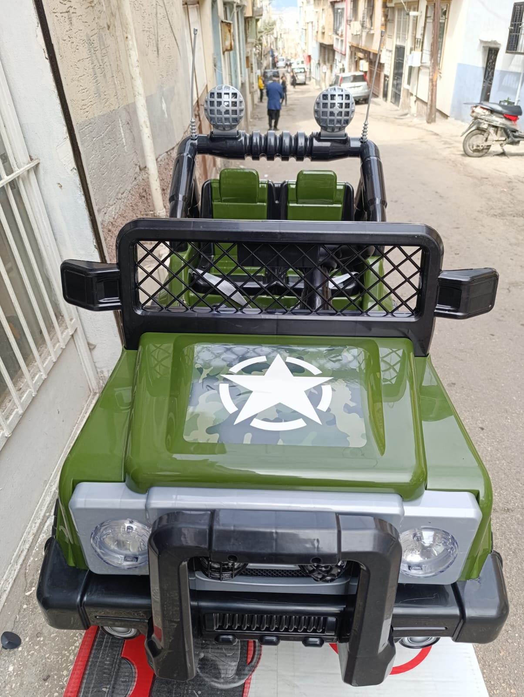
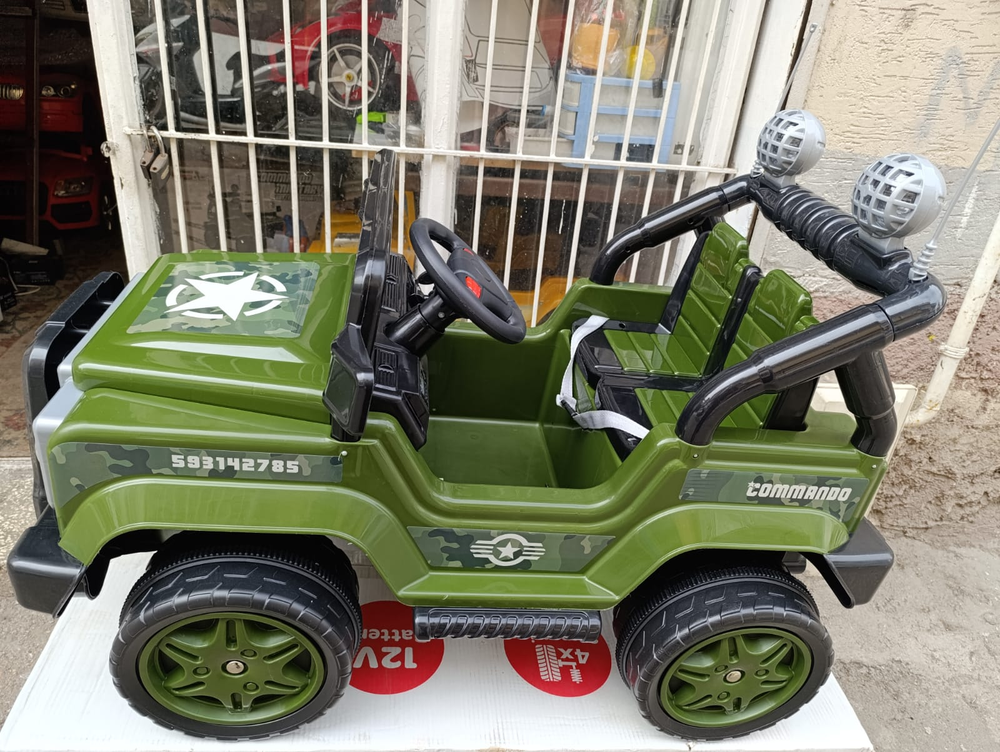
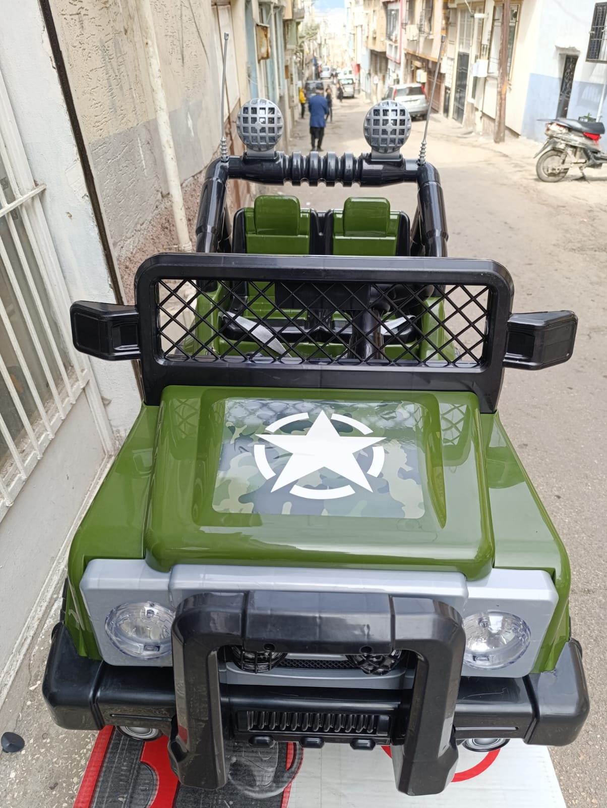
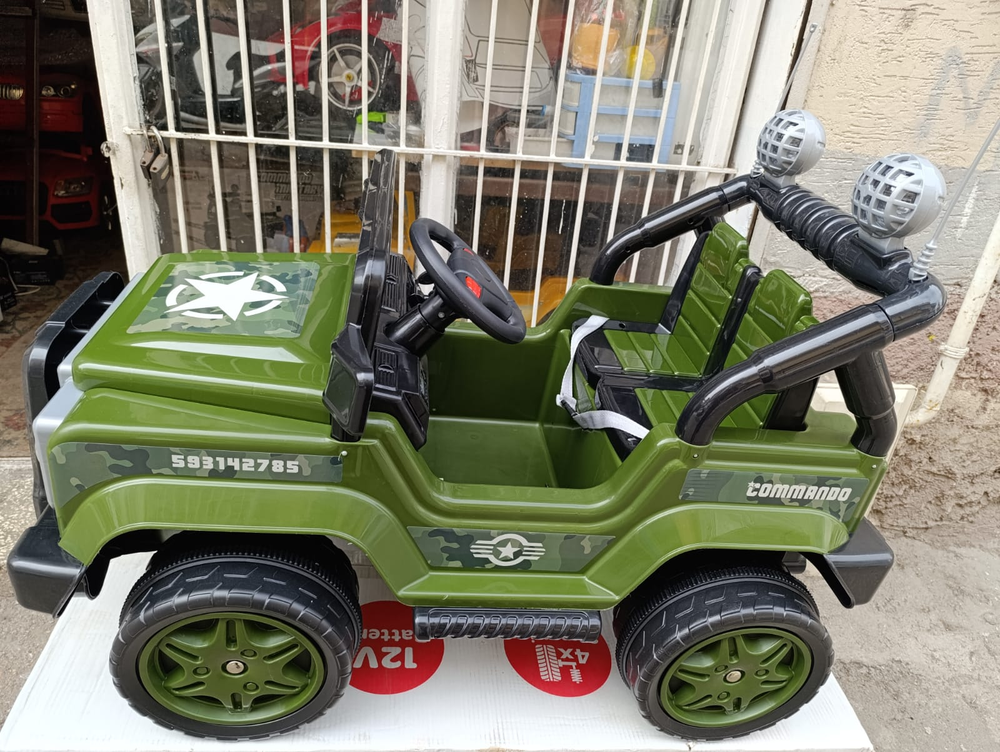
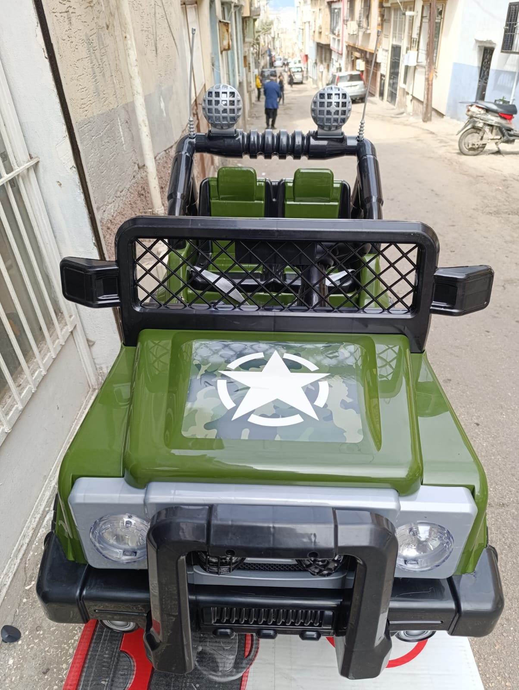
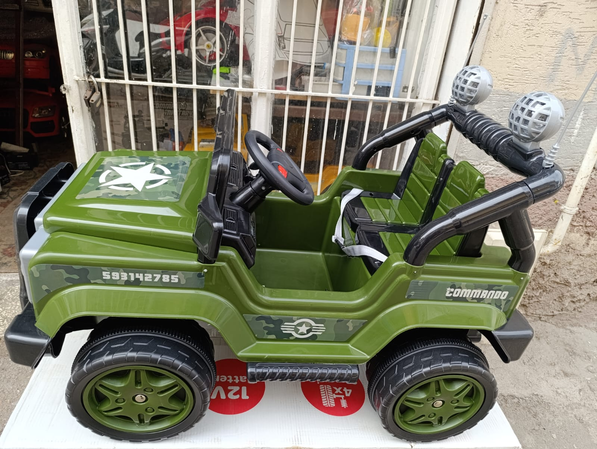

Galeriye Dön
 



Yeşil Komando Jeep


Teknik Özellikler
Maceraperest minikler için özel olarak tasarlanan Yeşil Komando Jeep akülü araba! Kamuflaj deseni, sağlam yapısı ve dikkat çekici tasarımıyla çocukların hayal gücünü harekete geçirir. Parkta, bahçede veya hafif arazide eğlenceli sürüşler için mükemmel bir arkadaştır.
- Akü: 12 Volt (Modelinize göre Ah değişebilir)
- Motor: Güçlü Tek veya Çift Motor (Modelinize göre değişir)
- Hız: Ortalama 3-5 km/s
- Koltuk: Tek Kişilik Rahat Koltuk
- Uzaktan Kumanda: Mevcut (Genellikle 2.4 Ghz)
- Aydınlatma: LED Ön Farlar ve Roll Bar Üzeri Işıklar
- Ses Sistemi: Korna ve Dahili Basit Müzikler/Ses Efektleri
- Taşıma Kapasitesi: Maksimum 25-30 kg (Tahmini)
- Uygun Yaş Aralığı: 2 - 6 Yaş (Tahmini)
- Emniyet Kemeri: Mevcut (Genellikle 2 noktalı)
- Malzeme: Dayanıklı Plastik Gövde
- Renk/Desen: Yeşil Kamuflaj
- Ekstra: Dekoratif Anten, Roll Bar
- Ürün Ölçüleri: (Gerekirse buraya ölçüleri ekleyin)